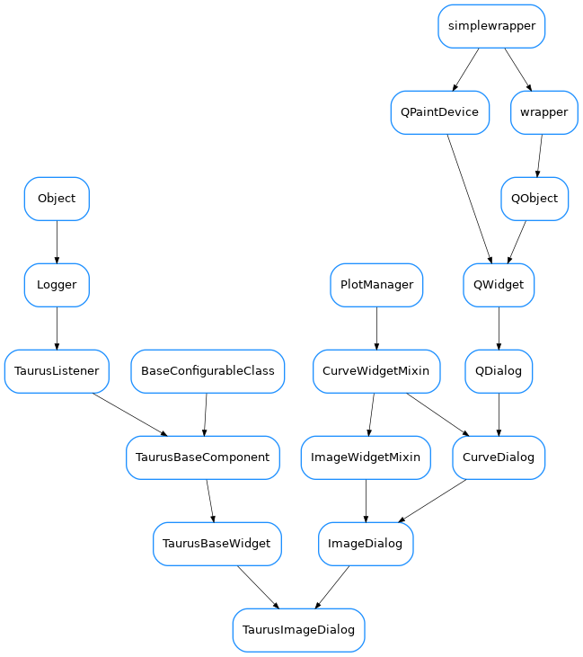

TaurusImageDialog¶

-
class
TaurusImageDialog(parent=None, designMode=False, toolbar=True, **kwargs)[source]¶ Bases:
guiqwt.plot.ImageDialog,taurus.qt.qtgui.base.taurusbase.TaurusBaseWidgetA taurus dialog for showing 2D data. It behaves as a regular
guiqwt.plot.ImageDialogbut it also offers the expected Taurus interface (e.g. setting models, save/apply configs, drag&drops,…)See also
TaurusImageWidget-
model¶ reimplemented from
TaurusBaseWidget
-
modifiableByUser¶ whether the user can change the contents of the widget
- Return type
- Returns
True if the user is allowed to modify the look&feel
-
rgbmode¶
-